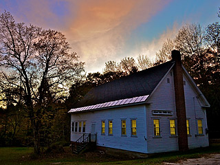

HDC Best Practices

This resource provides a breakdown of what the purpose of a Historic District Commission is. This resource also provides a distript of the following elements affect a Historic District Commision, the public, the policy, the procedure, the practice, the politics, and the perception.
Information and photo sourced from the Historic District Commission Best Practices documentRochester Historic District Commission

This website provides the links to documents about the City of Rochester Historic District Commision, including the HDC design guidelines, the district map, and the Commission's meeting minutes and agendas.
Information and photo sourced from the City of Rochester NH websiteThe NH Division of Historical Resources
"This is a list of the heritage and historic district commissions known to the New Hampshire Division of Historical Resources at this time."
Information sourced from the NH Division of Historical Resources list of HDC Photo sourced from the NH Division of Historical Resources website